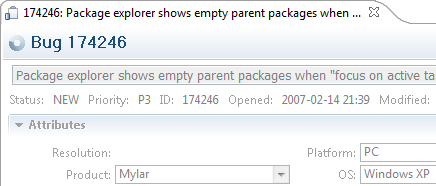

|
Release |
Resolved
|
Community Contributions |
2.0M2
Mar. 30 |
x
bugs |
...Nathan Hapke set up and tested
against Bugzilla 3.0, Shawn. Boris Pruessmann |
2.0M1
Feb. 16 |
183
bugs |
Brock Janiczak contributed his JIRA
web service wrapper. Meghan Allen contributed monitor improvements and
personal activity reporting and Brian de Alwis contributed monitor
fixes. Juerg Billeter contributed contributed repository URL
drag-and-drop. John Anvik contributed Bugzilla history parsing. Fixes
and patches were also provided by Shawn Minto, Hasan Ceylan, Dmitry
Stadnik, Hasan Ceylan, Alex Blewitt and Andrew Overholt. |
Also see the New & Noteworthy for:
Mylar 0.6-1.0, Mylar 0.5,
Mylar 0.4, Mylar 0.3
Update notes:
- We recommend using the Eclipse 3.3M6 release due to the
numerous UI improvements (see below)
- If upgrading from a 0.x version, first update to Mylar 1.0
and see the corresponding
update notes.
- The offline task data cache will be reset, so submit outgoing changes before
updating.
- Trac xml-rpc users: you will
need the
latest XmlRpcPlugin.
Tasks
|
Schedule Presentation in Task List
|
Task Activity view is gone and now part of Task List. May get
workbench warning on startup. Can use "Go Into" on today.
|
|
|
Hyperlinks Everywhere
(Eclipse 3.3 only)
|
All connectors, all editors. (some 3.3 only) [use IP log
as example]
|
|
|
Native date picker
(Eclipse 3.3 only)
|
...
|
|
|
Task editor
|
- Major performance improvements to open time, no more round-trip to
server on open
- New refresh button
and stale indication message in editor header, submit disabled when
editor is stale
- New Comment fills available space, better resizing when narrow,
New Comment area grows to fill
- Notification of updated data when editor is stale (in header)
 |
|
|
Due Dates
(Experimental)
|
... (see Bugzilla connector)
|
|
|
Task Editor lifecycle streamlined
|
The Task Editor no longer closes on submission, and instead shows
progress while it synchronizes with the repository. If incoming
changes occur while editor is open the refresh will preserve and
mark any outgoing changes. In order to
clear outgoing changes use the context menu -> Mark ->
Clear Outgoing. If an editor is opened for a task not in the
Task List the Add to Task List action can be used on the
editor's context menu. Formatting of the editor has been improved
and uses the new form look on Eclipse 3.3.
 |
|
|
Hyperlinks in Java Editor
(Eclipse 3.3 only)
|
References to tasks and bugs in the Java Editor and now hyperlinked
consistently with the Task Editor. The Task Repository must be
defined on the corresponding project (set via Project Properties -> Task Repository).
References to tasks must be moused over to turn into hyperlinks.
 |
|
|
Drag and Drop improvements
|
To attach files to a repository task them onto the Task Editor from
a navigator view or operating system window. Dragging a URL
that corresponds to a task onto the Task List will cause the
corresponding task to be created and added to the Task List, if the
corresponding repository exists. |
|
Task Repositories
|
Platform Proxy Settings
(Eclipse 3.3 only)
|
Can still set per-reposiotry...
 |
|
Task Context
|
Add to context elements from Synchronize view
|
Works for individual resources when in models mode.
1) Have incoming change set but no task or context for it, want to
see what changed with it.
2) Apply a patch that had no context and want to review
3) Make outgoing changes with no task active
|
|
|
Contexts can be retrieved from attachments table
|
...
 |
|
|
Task Context editor
|
The Context tab on the Task Editor provides a preview of the
task context contents. This facility can be used to remove
elements and edit their interest, for example, before sharing the
context with others. When first opened this view will show all of
the elements in the task context that have a corresponding content
provider (e.g. Java elements and files). For long-running tasks this
can cause a large number of elements that have decayed in interest
to show. The filter slider bar can be used to adjust
degree-of-interest threshold to show only the most interesting
elements.
 |
Bugzilla Connector
|
Due Dates and Time Tracking
|
...
|
|
|
No more max query settings
|
...
|
|
|
Local user names
|
If your Bugzilla repository is configured to use local user IDs
rather than full email IDs enable the corresponding option on the
Task Repository properties page.
 |
|
|
Time tracking
|
If Time Tracking is enabled on the repository an editable section
will show in the Task Editor.
|
JIRA Connector
|
Hyperlinks work from Java editor
(3.3 only)
|
...
|
|
|
Hyperlinking in Task Editor
|
References to JIRA issue keys are now hyperlinked.
|
|
|
JIRA Core Services
|
The JIRA feature will now install without requiring additional
downloads from Tigris.org. |
Trac Connector
|
Custom Fields
|
Trac now supports the selection from a list
of pre-defined values for custom fields...
|
|
|
Hyperlinks
(Eclipse 3.3 only)
|
...
 |
|